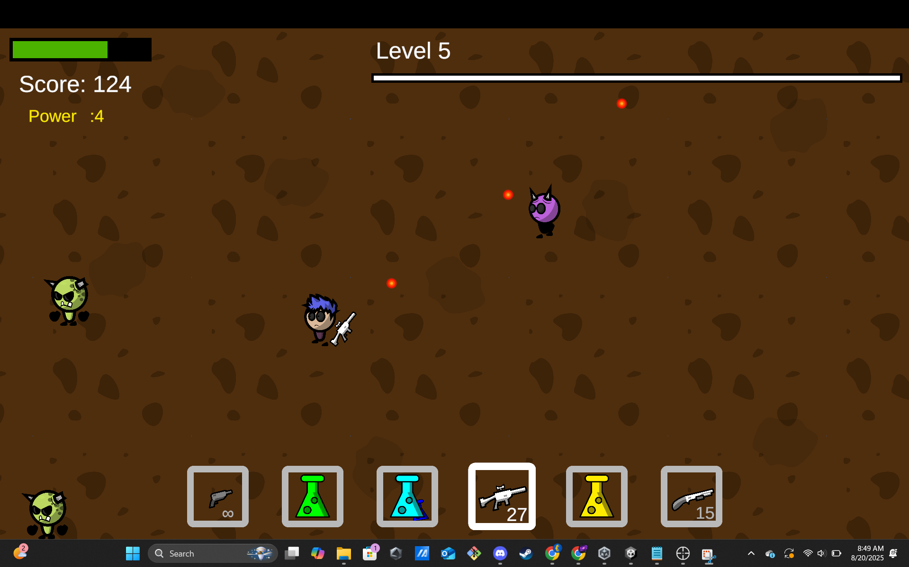

I've used Java, C++, C#, GML, TI Basic, Lua, Python, JavaScript, HTML, and CSS
(most proficient languages bolded)
Of block programming languages, I've used Scratch, LEGO Mindstorms EV3, and MCreator
C# with Unity
I very much like Unity. The syntax of C# and built-in systems offered by Unity make this my favorite
system.
Fish Bobble
Arcade-style game made in a week at NHSGA
Fish Bobble is a game that I made with Team 7 at Carnegie Mellon University's National High School Game
Academy. We were given a week to make our version of the arcade game Puzzle Bobble.
In Fish Bobble, you play as a pixel art fish protecting a sand castle: your home. Shoot bubbles at the
approaching clumps, matching sets of 3 to pop them! Look out for bombs!
I worked on the game after NHSGA as well. Once I remove all the bugs, I'll publish it on Itch.
The Team
Hannah Ying:Artist and Producer
Christopher Todd (me):Programmer
Eli Dew:Programmer
Gray Guenther:Artist
Cooper Panaro:Sound Design

Spooker Shooter
Fight hordes of monsters using weapons, potions, and gadgets!
This game was a learning project for me. I used
this Youtube series by Ketra Games
as a helpful reference for many features of the game, including the basics of player, bullet, and enemy movement
and health. It taught me how to use GUI elements, scene management, and animations. Once I had learned how to
use Unity, I developed 3 new enemy types, a detailed inventory system, weapon types, weapon collectables, a
level system, and a better enemy spawning system.
At SCHS, a student going into Computer Science is expected to take AP Computer Science Principles sophomore year,
AP Computer Science A junior year, and Game Design senior year. The technology teacher, Mrs. Sweeney, noticed that
I was far ahead of anyone else at the school, and allowed me to take AP Computer Science A my sophomore year,
skipping AP Computer Science Principles. I then learned Java my sophomore year.
I like Java. It's not my favorite language, mostly because I haven't used a good game engine using it. I definitely
prefer statically typed over dynamically typed languages, though. I also found the object-oriented nature of the
language intuitive and helpful.
Electron Configuration Calculator
After I had learned the basics of Java, my first program was an electron configuration calculator. I did this mainly
to study for Chemistry I. It worked, because after a whole year, I still know how to determine an electron
configuration by heart.
Lua
My experience with Lua comes from its use in Roblox, as well as a few other embedded software systems. I didn't put
much effort into learning this language, as its 1-based indexing system and overly user-friendly syntax threw me
off. I found the free server systems used by Roblox Studio to be slow and unreliable. I am also not a fan of the
audience a roblox games would get, that being an audience of young children. Because of the legal situation of
Roblox, I will never return.
One thing I really liked about Lua in Roblox is the fact that variables can reference functions, and functions can
be table elements. This was an interesting element of the language to use.
On Roblox, my username is majestic_sheep3.
Terror Tower Wars
Doomspire Brickbattle clone
"Doomspire Brickbattle" is, or was, a free asset available on Roblox Studio. It is essentially a finished
game, and thus
many have published the same game under different names that are all essentially copies of Doomspire
Brickbattle. I thought it would be good practice for me to do something similar, but I couldn't publish
publish someone else's work as my own. I created my own map similar to the Doomspires, created my own game
progress tracking and restarting code, and tested with friends. I did not create my own weapons entirely from
scratch, though.
Backrooms PVP
PVP in the ever-shifting Backrooms
This game takes inspiration from the Backrooms. This was mainly a project to help me learn the
programming Lua language, as I created the game entirely from scratch, only using 3D models and 2D art
from the Toolbox. I'll admit, though, isn't a very impressive project. I abandoned it mostly because
I realized I couldn't sell any gamepasses to go along with the game without breaking copyright law.
GML
GML stands for GameMaker Language, used in GameMaker Studio 2 and not much else. It is an imperative,
dynamically typed, object-oriented language, similar in nature to Python, but with some features in common with
Lua. I very much liked GML because of the built-in systems it had, and I found the syntax easy to use and
understand while not being too shallow.
Gun Guy
A 2D side-view game about shooting aliens
A very creatively named game, "Gun Guy" was the last one I ever made with GameMaker Studio before moving on to
Unity. I moved away from GML because I realized that I had no ability to compile GameMaker Studio games to
executables, as that requires an expensive liscence. Unfortunately, that means I can't share the ability to play
this game on this website. The best I can give is a YouTube video about the gameplay.
Scratch
The first programming language I learned was Scratch. I created a small handful of playable games.
Toward the end of my time using Scratch, I began to use Python.
Use the arrow keys or WASD to move, and press R to restart. Each color has a different effect on the
player. Check new ones when you find them!
This was originally intended to be an alpha version of a game still in development.
Press m to chose singleplayer or multiplayer. Default is singleplayer. Player 1 uses arrow keys and
Player 2 uses a and d.
Game speed starts on Normal, though the AI is significantly worse on Fast mode, and sometimes makes simple
mistakes on Slow mode!
The High Score is the highest amount of points anyone has ever had over the AI, but it will only work
properly when on the website and logged in.